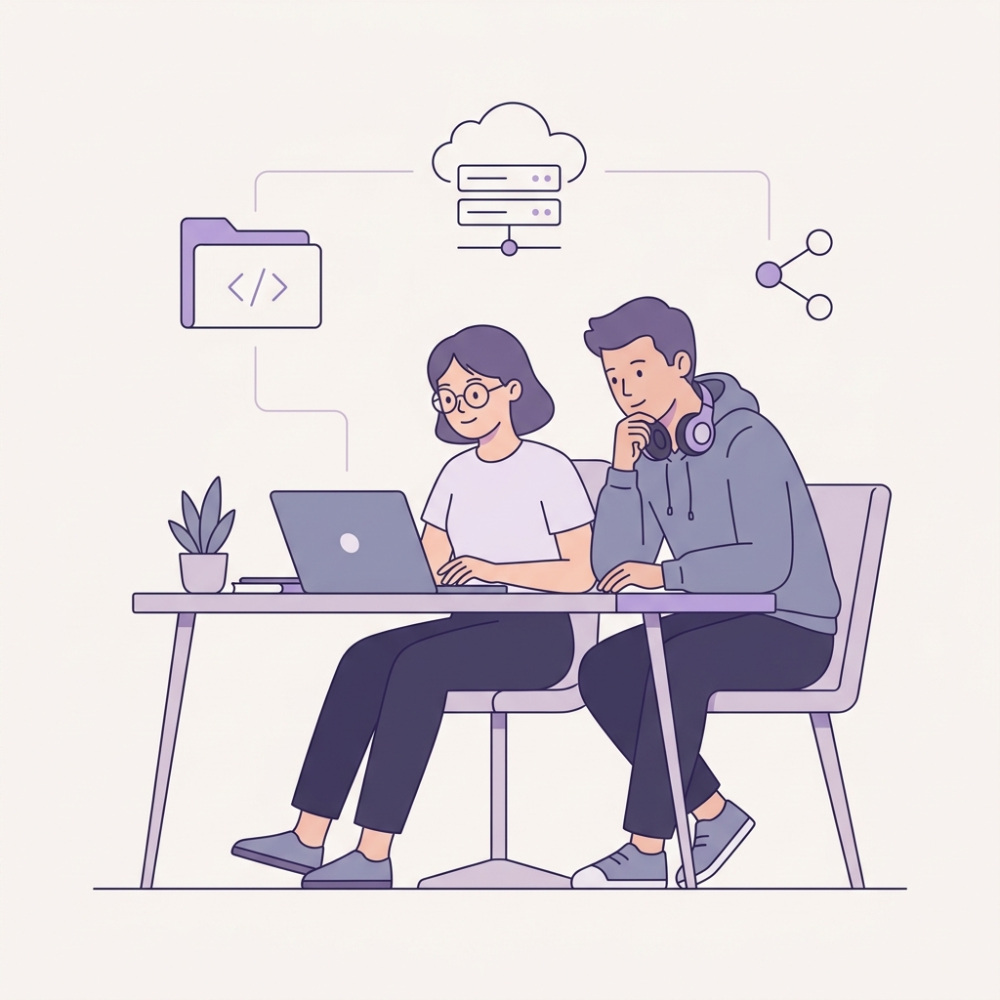
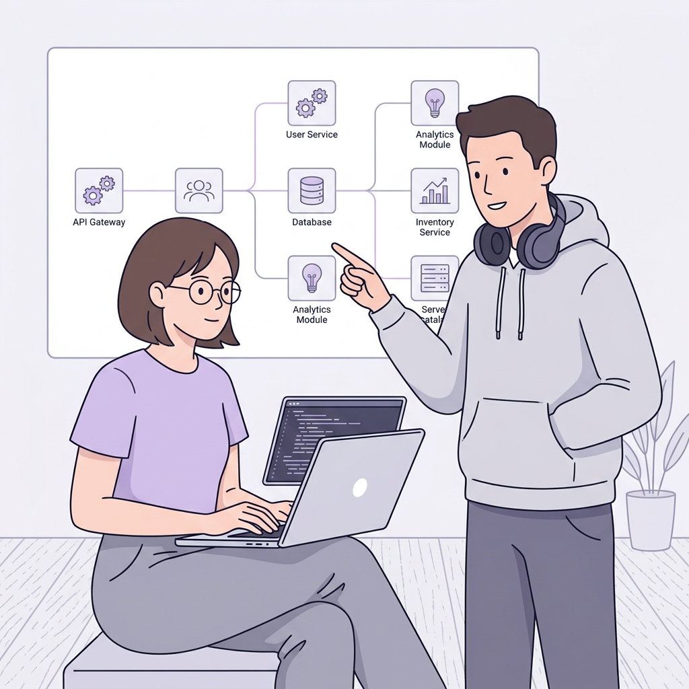
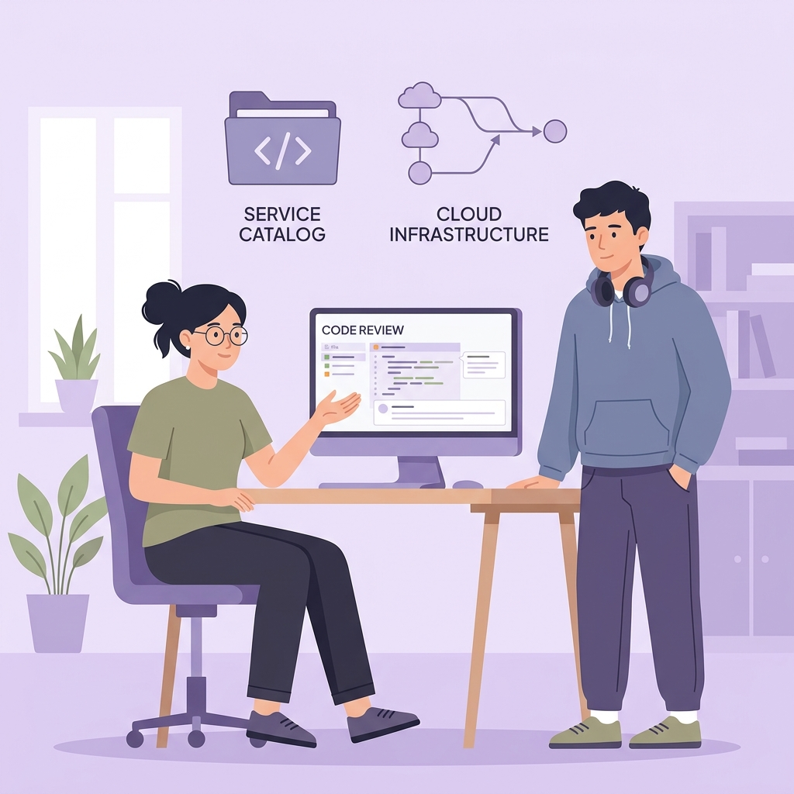

Karakter: Gadis muda berkacamata dengan t-shirt & celana panjang + Pria ber-hoodie dengan headphone dikalungkan di leher. Gaya 2D flat minimalis, warna ungu lembut pastel (tidak menusuk mata), tanpa elemen 3D tebal.

Gadis muda santai di depan laptop tersenyum ramah, pria duduk bersandar menyimak. Di atasnya terdapat diagram outline 2D datar tipis: folder kode, server rack, dan node mesh. Sangat tenang dan airy.

Gadis muda mengetik di laptop, pria berdiri di sebelahnya dengan satu tangan di saku hoodie menunjuk ke diagram arsitektur microservices di whiteboard (API Gateway, DB, Catalog).

Gadis muda berambut cepol duduk di kursi ergonomis menjelaskan baris kode di layar besar, pria ber-hoodie mendengar di samping meja. Di atasnya ada badge flat vector "Service Catalog" dan "Cloud Infrastructure".
Semua opsi di atas di-generate langsung dari Grok Image API (`ag-cl-grok`).
Silakan pilih opsi mana yang Anda sukai (Opsi 1, Opsi 2, atau Opsi 3) dan saya akan langsung memasangnya ke halaman live /login!